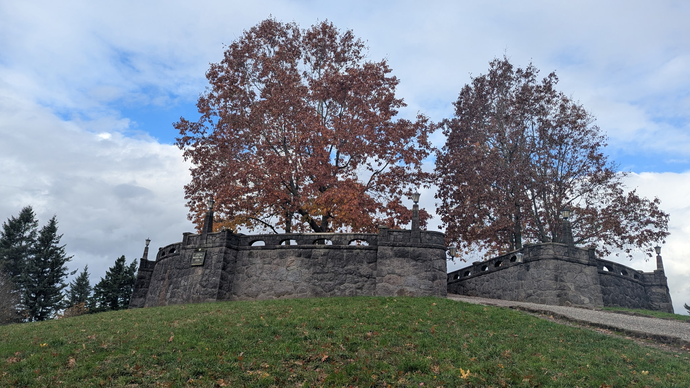

We've had a beach hazards statement put out by the National Weather Service for about two weeks now. "Beach Hazards" usually indicates sneaker waves.
The unpredictability of sneaker waves and their tendency to arrive suddenly after lengthy periods of gentle, lapping waves makes it easy for them to surprise unwary or inexperienced beachgoers; because they are much larger than preceding waves, sneaker waves can catch inattentive swimmers, waders, and other people on beaches and ocean jetties and wash them into the sea. The force of a sneaker wave's surge and the large volume of water rushing far up a beach is enough to suddenly submerge people thigh- or waist-deep, knock them off their feet, and drag them into the ocean or trap them against rocks.
A tourist got caught out by one recently: 'Tragic' surf rescue near Siletz Bay.
The ocean's been angry these days, my friend.
This is a bit on the extreme side of standard Fall and Winter ocean behavior. In these months the beaches get smaller as the ocean pulls away much of the sand it built up over the Spring and Summer months. How does it pull the sand away, you might ask? Let's ask UC-Santa Barbara.
High-energy winter storm waves pull sand offshore, creating more narrow, cobbled beaches. Lower, gentle summer waves carry sand onshore, widening beaches.
In fact, the wave action has been so intense here that two weeks ago we had some big wave surfers out there doing their thing about 100 yards from shore. Never seen them that close before. The waves were so big and the sea was so gnarly that they had a wave runner towing people into the waves and out of the surf.
Portland visit today.
Hit two extinct volcanoes - Mt. Tabor and Joseph Wood Hill Park. Mt. Tabor was glorious with Fall colors. Joseph Wood had great views of a bunch of different peaks and the Columbia River. Also had a nifty fort-type thing at the top.

Next stop was Laurelhurst Park which was bigger than we thought it'd be and also full of colorful foliage. Beautiful.
Stopped at Steakadelphia for lunch. Ate outside at the picnic tables. Good food that just did not agree with our tummies. While The Better Half was using the facilities I witnessed a ... call it a traffic dispute. Young guy in a beat up mini-van and middle-aged guy in a hatchback. Didn't see what originally happened, but they both stopped, rolled down their windows, yelled at each other across five lanes of traffic, then exited their vehicles. Kid stomped across all five lanes without looking. Dicey proposition. They exchanged viewpoints with verve. Young guy kept wandering back and forth into traffic. Middle-aged guy kept goading him on. They finally had enough, returned to their vehicles, and drove off.
Traffic behaved very well, thank goodness, so no one was smooshed.
The Better Half came back outside and asked me what was going on. Said the people inside were all staring out the big picture window (which was directly behind me). Poor thing thought something had happened to me.
Not me, your honor, no troublemaker I.
Just finished with the first of the king tides of the season, throw in a weather prediction of no rain on Saturday, and tourists abound. Though, to be fair, tourists almost always abound (save for about two weeks after Labor Day and a week or so after New Year's). Saturday looks like it will be a good day for a ride, but fear I might yet be suffering the ill effects of the steak sandwich of doom.
Dooooooooom, I tells ya! Dooooooooooooom!
Washed the house. Number 3,854 on the list of "Things I Do As a Homeowner That I Didn't Even Know Were Things I Had To Do As A Homeowner." Never had to do it in the Midwest, but it turns out if you live a hundred yards or so from the Pacific Ocean there tends to be a little salt build up on things, which eventually turns those things, like locks, for instance, into this:

and turns gas station crash barrier protective things - is that what they're called? they must be called something better than that. gas station crash protection barriers? gas station barrier: crash protectors? gas station "big metal thingies that make sure your multi-ton vehicles don't cause ginormous fireballs" protectors? - anyways, turns gas station crash barrier protective things into this:

So we wash our house every couple of months, and spray it down with water once a month or so, and thank goodness we don't have to dry it afterwards because well, actually, drying the house with a, I don't know, a leaf blower...yeah, with a leaf blower, that might be kinda cool, I mean what if you get a blow out style thing going like these dogs but for your house so your house would be all nice and coiffed (two "f's" in coiffed? really?) and, well, poofy.
Poofy house paint. Who doesn't want a poofy house?
After the house wash I had to hose down the car because did you see those two pictures above and imagine what that does to a car after a while and then I mowed the lawn - yes, in November, and December, and January, and March - because grass keeps growing all year round out here, only in the winter rains it starts looking really spotty and shaggy, like a 15-year-old kid trying to grow their first beard

but it still grows, or maybe it still grows because of all the things that come and shit in my lawn like elk and deer and birds and deer and opossums and deer and slugs and deer and don't believe me? Here are some elk just chilling in the back yard:
and here is a deer actually moving from the slightly untamed/wild part of the yard where it would be in the "it still sucks if it poops in my yard" category of yard pooping but wouldn't be in the "aw, man, it pooped in the grass in my yard, I gotta go clean that up!" levels of suckiness, to the actual fucking grass in order to drop a deuce only i think it ate so many of my goddamned flowers that it was constipated, the little fucker:
Yeah, so, anyway, I had to wash the house.
caveat lector